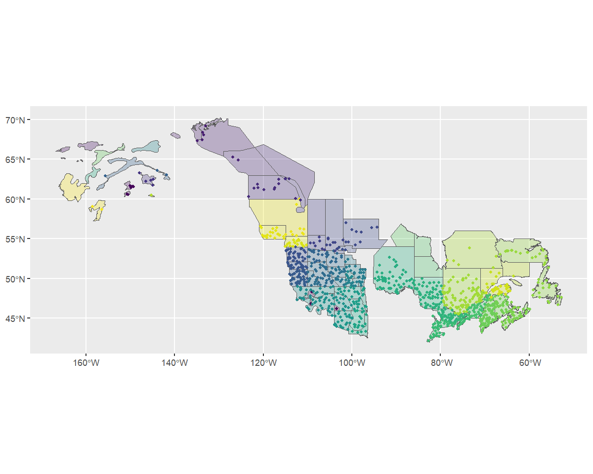
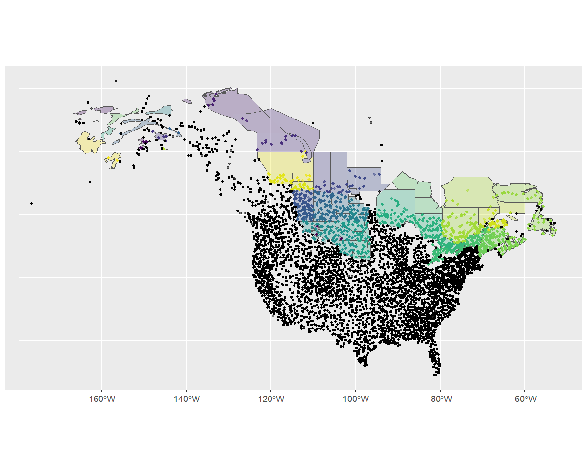
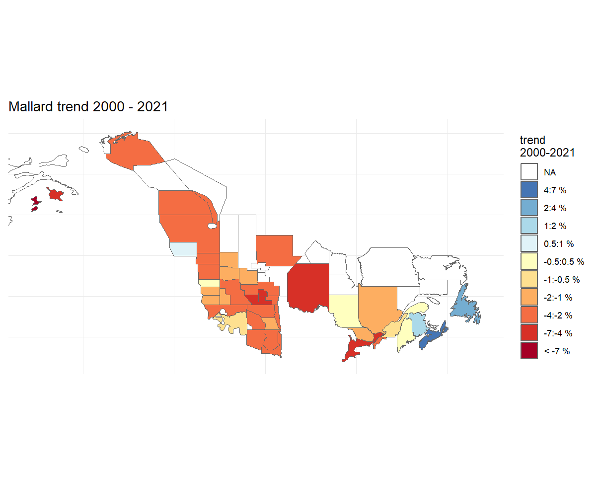

library(bbsBayes2)
library(sf) # Spatial data manipulations
#> Warning: package 'sf' was built under R version 4.5.2
library(dplyr) # General data manipulations
library(ggplot2) # Plotting
library(patchwork) # mutli-plot
#> Warning: package 'patchwork' was built under R version 4.5.2In this vignette we’ll explore the various ways you can stratify the BBS data in preparation for running the models.
You can use existing, pre-defined stratifications, subset an existing stratification (e.g., clip the data to your area of interest), or load your own custom stratification, either using a completely new set of spatial data, or by modifying the spatial polygons of an existing strata.
This vignette assumes that the BBS data have already been downloaded and that you are familiar with the basics of the bbsBayes2 workflow
Stratifying with built-in stratifications
The built-in stratifications are bbs, bbs_usgs, bbs_cws, bcr, bcr_old, latlong, prov_state.
-
bbs– New as of Version 1.1.3.1. Intersections of Political regions X Updated Bird Conservation Regions (Stratification used by the Canadian Wildlife Service [CWS] for national status reporting as of 2024) -
bbs_cws– Intersections of Political regions X Bird Conservation Regions (Stratification formerly used by the Canadian Wildlife Service [CWS] for national status reporting) -
bbs_usgs– Intersections of Political regions X Bird Conservation Regions (Stratification used by the United Status Geological Survey [USGS] for national status reporting) -
bcr– Updated (2025) Bird Conservation Regions, including the subdivisions of four former northern BCRs (3, 6, 7, and 8) into the following 10 BCRs: 3C, 3N, 3S, 6N, 6S, 7E, 7W, 7H, 8E and 8W. -
bcr_old– Bird Conservation Regions used prior to version 1.1.3.1, includes large northern BCRs (3, 6, 7, and 8). Primarily included for reproducibility. -
prov_state– Political regions only - states, provinces, and territories -
latlong– Grid-cells of 1 degree of latitude X 1 degree of longitude, aka “degree-blocks”. These are the original survey design strata for the BBS. Routes are established at randomized locations within these degree-blocks.
You can visualize these stratifications by looking at the maps
included in bbsBayes2 with load_map().
ggplot(data = load_map("bbs"), aes(fill = strata_name)) +
geom_sf() +
scale_fill_viridis_d(guide = "none")To stratify BBS data, you can use these existing stratifications by
specifying by = "name" in the stratify()
function.
s <- stratify(by = "bbs_usgs", species = "Mallard")
#> Using 'bbs_usgs' (standard) stratification
#> Loading BBS data...
#> Filtering to species Mallard (1320)
#> Stratifying data...
#> Preparing strata (ESRI:102008; North_America_Albers_Equal_Area_Conic)...
#> Calculating area weights...
#> Joining routes to spatial layer...
#> Renaming routes...
#> Omitting 2,436/127,482 surveys, on 111 unique routes that do not match a stratum.
#> To see omitted routes use `return_omitted = TRUE` (see ?stratify)The latlong stratification - special note
The latlong stratification by = "latlong" is the
finest-scale stratification built into the package, and so it divides
the BBS data into many more strata-units than other stratifications.
Therefore, you may wish to adjust the minimum data inclusion criteria
when preparing the data. Specifically, setting
min_n_routes = 1 ensures that every grid-cell with at least
one BBS route can be included. There are many degree-blocks that have
only one route, as this is the original sampling design goal of the BBS
(at least one route within each degree-block).
s <- stratify(by = "latlong", species = "Mallard", use_map = FALSE)
#> Using 'latlong' (standard) stratification
#> Loading BBS data...
#> Filtering to species Mallard (1320)
#> Stratifying data...
#> Renaming routes...
#> Omitting 115/127,482 surveys, on 7 unique routes that do not match a stratum.
#> To see omitted routes use `return_omitted = TRUE` (see ?stratify)
p <- prepare_data(s, min_n_routes = 1)Custom stratifications
bbsBayes2 can stratify the BBS data using any polygon map as input.
Load a custom stratification map
To define a completely different stratification, you’ll need to provide a spatial data object with polygons defining your strata.
In our example we’ll use WBPHS stratum boundaries. This is available from available from the US Fish and Wildlife Service Catalogue: https://ecos.fws.gov/ServCat/Reference/Profile/142628
To run this locally, download the file manually and unzip the shapefile contents into subdirectory of your working directory called output.
To use this file in bbsBayes2, we need to load it as an sf object using the sf package.
map <- sf::read_sf("output/WBPHS_stratum_boundaries.shp")
ggplot(map, aes(fill = factor(stratum))) +
geom_sf() +
scale_fill_viridis_d(guide = "none")### Identify the strata names
We see that it has one column that reflects the stratum names. First
we’ll rename this column to strata_name, and mutate it into
a character value, so that the stratify() function knows
what attribute includes the names that define each stratum.
map <- rename(map, strata_name = stratum) %>%
mutate(strata_name = as.character(strata_name))Stratify the data
Now we have the spatial data and relevant information to pass to
stratify().
When using a custom stratification, the by argument is
just a user-defined arbitrary name to document which stratification was
used. This name gets passed into the meta data of the following steps
and the final fitted model. Let’s use something informative, but short
(although there’s no limit). We also need to give the function our
map.
s <- stratify(by = "WBPHS", species = "Mallard", strata_custom = map)
#> Using 'wbphs' (custom) stratification
#> Loading BBS data...
#> Filtering to species Mallard (1320)
#> Stratifying data...
#> Preparing strata (EPSG:4326; WGS 84)...
#> Summarizing strata...
#> Calculating area weights...
#> Joining routes to spatial layer...
#> Renaming routes...
#> Omitting 106,608/127,482 surveys, on 3,783 unique routes that do not match a stratum.
#> To see omitted routes use `return_omitted = TRUE` (see ?stratify)Note that strata names are automatically put into lower case for consistency.
We can take a quick look at the output, by looking at the meta data and routes contained therein.
s[["meta_data"]]
#> $stratify_by
#> [1] "wbphs"
#>
#> $stratify_type
#> [1] "custom"
#>
#> $species
#> [1] "Mallard"
#>
#> $sp_aou
#> [1] 1320
s[["routes_strata"]]
#> # A tibble: 20,874 × 34
#> strata_name country_num state_num route route_name active bcr route_type_id route_type_detail_id
#> <chr> <dbl> <dbl> <chr> <chr> <dbl> <dbl> <dbl> <dbl>
#> 1 3 840 3 3-4 BIRCH LAKE 1 4 1 1
#> 2 3 840 3 3-4 BIRCH LAKE 1 4 1 1
#> 3 3 840 3 3-4 BIRCH LAKE 1 4 1 1
#> 4 3 840 3 3-4 BIRCH LAKE 1 4 1 1
#> 5 3 840 3 3-4 BIRCH LAKE 1 4 1 1
#> 6 3 840 3 3-4 BIRCH LAKE 1 4 1 1
#> 7 3 840 3 3-4 BIRCH LAKE 1 4 1 1
#> 8 3 840 3 3-4 BIRCH LAKE 1 4 1 1
#> 9 3 840 3 3-4 BIRCH LAKE 1 4 1 1
#> 10 3 840 3 3-4 BIRCH LAKE 1 4 1 1
#> # ℹ 20,864 more rows
#> # ℹ 25 more variables: route_data_id <dbl>, rpid <dbl>, year <dbl>, month <dbl>, day <dbl>,
#> # obs_n <dbl>, total_spp <dbl>, start_temp <dbl>, end_temp <dbl>, temp_scale <chr>,
#> # start_wind <dbl>, end_wind <dbl>, start_sky <dbl>, end_sky <dbl>, start_time <dbl>,
#> # end_time <dbl>, assistant <dbl>, quality_current_id <dbl>, run_type <dbl>, state <chr>,
#> # st_abrev <chr>, country <chr>, longitude <dbl>, latitude <dbl>, area_sq_km <dbl>Visualise the new strata and data
To get a different look we can also plot this data on top of our map
using ggplot2. Note that we use factor() to ensure the
strata names are categorical.
rts <- s[["routes_strata"]] %>%
st_as_sf(coords = c("longitude", "latitude"), crs = 4326)
ggplot() +
geom_sf(data = map, aes(fill = factor(strata_name)), alpha = 0.3) +
geom_sf(data = rts, aes(colour = factor(strata_name)), size = 1) +
scale_fill_viridis_d(aesthetics = c("colour", "fill"), guide = "none")
Omitted BBS routes
Based on the message we received during stratification
(Omitting...) and this map, it looks as if our custom
stratification is excluding some BBS data (i.e., routes with starting
locations that are not overlapped by the strata map). This makes sense
because the WBPHS survey area is much smaller than the region covered by
the BBS. However, let’s confirm that the excluded routes are the ones we
expect.
We can re-run the stratification with
return_omitted = TRUE which will attach a data frame of
omitted strata to the output.
s <- stratify(by = "WBPHS", species = "Mallard", strata_custom = map,
return_omitted = TRUE)
#> Using 'wbphs' (custom) stratification
#> Loading BBS data...
#> Filtering to species Mallard (1320)
#> Stratifying data...
#> Preparing strata (EPSG:4326; WGS 84)...
#> Summarizing strata...
#> Calculating area weights...
#> Joining routes to spatial layer...
#> Renaming routes...
#> Omitting 106,608/127,482 surveys, on 3,783 unique routes that do not match a stratum.
#> Returning omitted routes.
s[["routes_omitted"]]
#> # A tibble: 106,608 × 11
#> year strata_name country state route route_name latitude longitude bcr obs_n total_spp
#> <dbl> <chr> <chr> <chr> <chr> <chr> <dbl> <dbl> <dbl> <dbl> <dbl>
#> 1 1967 <NA> US ALABAMA 2-1 ST FLORIAN 34.9 -87.6 27 1140018 56
#> 2 1969 <NA> US ALABAMA 2-1 ST FLORIAN 34.9 -87.6 27 990062 52
#> 3 1970 <NA> US ALABAMA 2-1 ST FLORIAN 34.9 -87.6 27 990062 52
#> 4 1971 <NA> US ALABAMA 2-1 ST FLORIAN 34.9 -87.6 27 990062 56
#> 5 1972 <NA> US ALABAMA 2-1 ST FLORIAN 34.9 -87.6 27 990062 54
#> 6 1973 <NA> US ALABAMA 2-1 ST FLORIAN 34.9 -87.6 27 1060057 52
#> 7 1974 <NA> US ALABAMA 2-1 ST FLORIAN 34.9 -87.6 27 1060057 55
#> 8 1975 <NA> US ALABAMA 2-1 ST FLORIAN 34.9 -87.6 27 1060057 59
#> 9 1976 <NA> US ALABAMA 2-1 ST FLORIAN 34.9 -87.6 27 1060057 56
#> 10 1977 <NA> US ALABAMA 2-1 ST FLORIAN 34.9 -87.6 27 1060057 51
#> # ℹ 106,598 more rowsLet’s take a look.
omitted <- st_as_sf(s[["routes_omitted"]], coords = c("longitude", "latitude"),
crs= 4326)
ggplot() +
geom_sf(data = map, aes(fill = factor(strata_name)), alpha = 0.3) +
geom_sf(data = rts, aes(colour = factor(strata_name)), size = 1, alpha = 0.5) +
geom_sf(data = omitted, size = 0.75, alpha = 0.5) +
scale_fill_viridis_d(aesthetics = c("colour", "fill"), guide = "none")
The map shows that most of the omitted routes are routes that are clearly outside of our desired stratification. However, it also shows that there are some BBS route start-points that are just outside of the strata (e.g., some routes in Nova Scotia and Alaska). The user can decide what to do with these sorts of minor overlap issues. For example, buffering the original stratification map might make sense in some situations. For now, we will trust our custom strata map and retain only the BBS routes with start locations inside our strata polygons.
Fitting the model
To fit the model, we follow the standard workflow using our stratified data.
p <- prepare_data(s,
min_year = 2000,
max_year = 2021) #subset a shorter time-span to speed model-fit
sp <- prepare_spatial(p,map)
#> Preparing spatial data...
#> Supplied strata_map is in a geographic projection. Transforming coordinate reference system to a projected and equal area crs to facilitate mapping and neighbourhood relationships. This will not affect the relationship between strata and the BBS data, only ensures that neighbours are consistently defined and easily mapped.
#> Summarizing polygons by strata...
#> Identifying neighbours (non-Voronoi method)...
#> Linking islands (isolated groups of nodes)...
#> Islands found (5). Linking by distance between centroids...
#> Islands found (4). Linking by distance between centroids...
#> Islands found (3). Linking by distance between centroids...
#> Islands found (2). Linking by distance between centroids...
#> Islands found (1). Linking by distance between centroids...
#> Formating neighbourhood matrices...
#> Plotting neighbourhood matrices...
mp <- prepare_model(sp,model = "first_diff",
model_variant = "spatial")
m <- run_model(mp,
iter_warmup = 500,
iter_sampling = 100)Predictions from the model using the custom stratification
Now we can start to look at the indices and trends related to our model.
We can apply the generate_indices() and
generate_trends() functions to the output from our model,
the same as we would with the built-in stratifications.
i <- generate_indices(m)
#> Processing region continent
#> Processing region stratum
t <- generate_trends(i)And with one additional argument, we can also use the
plot_map() function.
trend_map <- plot_map(t, strata_custom = map)
trend_map
Generating state and province predictions from a custom stratification
A useful feature of the hierarchical Bayesian models for the BBS is the ability to generate formal estimates of indices (annual relative abundance) and trends (rates of population change) for any composite region. Formal estimates meaning we can estimate the full posterior distribution, including a point estimate and its associated uncertainty (credible limits). These composite regions can be defined based on any combination of the underlying strata used to fit the model. For example, using any custom stratification, we can generate estimates for political jurisdictions (countries, states, provinces), as long as we can comfortably designate each of the strata to one of these jurisdictions.
By default, generate_indices() creates indices at two
levels “continent” (the combination of all strata used in the analysis)
and “stratum” (estimates for individual strata). For the two
bbs stratifications (“bbs_usgs” and “bbs_cws”), we can also add
“prov_state”, “bcr”, “bcr_by_country” (where appropriate). For any
custom stratification, we can also add the political jurisdictions
and/or create our own regional divisions and provide them as a
regions_index data frame.
For example, let’s imagine we would like to calculate regional indices for each stratum, country, province/state, as well as for a custom division of eastern and western regions.
First we’ll need to tell the function which strata belong to which province or state, and then which belong to the ‘east’ and which to the ’west.
We’ll start by using a helper function
assign_prov_state(). This function takes a map of strata
and assigns each strata to a province or state depending on the amount
of overlap. By default it will warn if the amount of overlap is less
than 75%, but in this case, we will lower that cutoff to 60%. The plot
gives us a chance to make a quick assessment of whether we’re happy with
how the various strata have been assigned.
rindex <- assign_prov_state(map, min_overlap = 0.6, plot = TRUE)Next we’ll define the east/west divide by hand. If we plot the strata by name, we can pick out which are eastern and which western.
ggplot(rindex) +
geom_sf(data = load_map(type = "North America")) +
geom_sf() +
geom_sf_text(aes(label = strata_name), size = 2)
#> Warning in st_point_on_surface.sfc(sf::st_zm(x)): st_point_on_surface may not give correct results for
#> longitude/latitude dataThe western and eastern strata seem to be split numerically, such
that the western strata have numbers lower than 50 or greater than 74,
eastern strata have numbers in between. So we’ll add a column to the
rindex dataframe with “east” and “west” character names to
group the strata.
rindex <- mutate(
rindex,
east_west = if_else(as.numeric(strata_name) < 50 | as.numeric(strata_name) > 74,
"west",
"east"))And now double check that we correctly grouped the strata!
ggplot(data = rindex) +
geom_sf(data = load_map(type = "North America")) +
geom_sf(data = rindex, aes(fill = east_west), alpha = 0.5)Then supply the rindex object to the
regions_index argument of the
generate_indices() function and include the relevant column
names from the object as regions.
i <- generate_indices(
m,
regions = c("stratum", "country", "prov_state", "east_west"),
regions_index = rindex)
#> Processing region stratum
#> Processing region country
#> Processing region prov_state
#> Processing region east_west
t <- generate_trends(i)We can plot the population trajectories for each of these regions
with plot_indices().
p <- plot_indices(i)
names(p)
#> [1] "1" "14" "17"
#> [4] "18" "2" "22"
#> [7] "24" "26" "27"
#> [10] "28" "29" "30"
#> [13] "31" "32" "33"
#> [16] "34" "35" "37"
#> [19] "38" "39" "40"
#> [22] "41" "42" "43"
#> [25] "44" "45" "46"
#> [28] "47" "48" "49"
#> [31] "50" "51" "52"
#> [34] "53" "54" "55"
#> [37] "56" "62" "63"
#> [40] "64" "66" "68"
#> [43] "72" "75" "76"
#> [46] "77" "Canada" "United_States_of_America"
#> [49] "AB" "AK" "MB"
#> [52] "ME" "MT" "NB"
#> [55] "ND" "NL" "NS"
#> [58] "NT" "NY" "ON"
#> [61] "QC" "SD" "SK"
#> [64] "east" "west"
p[["east"]] + p[["west"]]Finally we can even create geofaceted plots (which is only possible in our case because we assigned our strata to Provinces and States and calculated indices for these regions). These geofacet plots can be useful for visualizing the population trajectories of species with broad ranges across many states and provinces.
plot_geofacet(i, trends = t, multiple = TRUE)Subsetting an existing stratification
In general, it is often useful to use all of the data for a given species, even if you’re only interested in trends for a portion of the species’ range (estimates of observer effects are informed by all of the data in the analysis). However, there may be situations where the focus of your study is limited to a particular region. For example what if you want to use one of the standard stratifications, but you only want the analysis to be influenced by data from one region, say only Canadian data?
In this case you can subset the BBS CWS stratification to only
Canadian regions, and use that subset of regions as a custom
stratification in the stratify() function.
In addition to maps, stratifications are available as data frames in
the bbs_strata object.
names(bbs_strata)
#> [1] "bbs" "bbs_usgs" "bbs_cws" "bcr" "bcr_old" "latlong" "prov_state"
head(bbs_strata[["bbs_cws"]])
#> # A tibble: 6 × 7
#> strata_name area_sq_km country country_code prov_state bcr bcr_by_country
#> <chr> <dbl> <chr> <chr> <chr> <dbl> <chr>
#> 1 CA-AB-10 52565. Canada CA AB 10 Canada-BCR_10
#> 2 CA-AB-11 149352. Canada CA AB 11 Canada-BCR_11
#> 3 CA-AB-6 445135. Canada CA AB 6 Canada-BCR_6
#> 4 CA-AB-8 6987. Canada CA AB 8 Canada-BCR_8
#> 5 CA-BC-10 383006. Canada CA BC 10 Canada-BCR_10
#> 6 CA-BC-4 193180. Canada CA BC 4 Canada-BCR_4We can now modify and use this data frame as we like.
my_cws <- filter(bbs_strata[["bbs_cws"]], country == "Canada")
s <- stratify(by = "bbs_cws", species = "Mallard", strata_custom = my_cws)
#> Using 'bbs_cws' (subset) stratification
#> Loading BBS data...
#> Filtering to species Mallard (1320)
#> Stratifying data...
#> Preparing strata (ESRI:102008; North_America_Albers_Equal_Area_Conic)...
#> Calculating area weights...
#> Joining routes to spatial layer...
#> Renaming routes...
#> Error in UseMethod("semi_join"): no applicable method for 'semi_join' applied to an object of class "list"Note that the stratification is now “bbs_cws” and “subset”
s[["meta_data"]]
#> $stratify_by
#> [1] "wbphs"
#>
#> $stratify_type
#> [1] "custom"
#>
#> $species
#> [1] "Mallard"
#>
#> $sp_aou
#> [1] 1320We can see the strata included by looking at the
meta_strata
print(s[["meta_strata"]], n = Inf)
#> # A tibble: 63 × 1
#> strata_name
#> <chr>
#> 1 3
#> 2 14
#> 3 8
#> 4 1
#> 5 2
#> 6 1
#> 7 15
#> 8 17
#> 9 18
#> 10 77
#> 11 23
#> 12 67
#> 13 76
#> 14 69
#> 15 66
#> 16 24
#> 17 70
#> 18 75
#> 19 22
#> 20 26
#> 21 71
#> 22 30
#> 23 50
#> 24 25
#> 25 70
#> 26 31
#> 27 27
#> 28 68
#> 29 72
#> 30 36
#> 31 32
#> 32 28
#> 33 64
#> 34 37
#> 35 34
#> 36 33
#> 37 63
#> 38 29
#> 39 65
#> 40 51
#> 41 40
#> 42 56
#> 43 35
#> 44 62
#> 45 41
#> 46 38
#> 47 39
#> 48 0
#> 49 45
#> 50 42
#> 51 47
#> 52 43
#> 53 0
#> 54 0
#> 55 46
#> 56 52
#> 57 53
#> 58 55
#> 59 0
#> 60 44
#> 61 54
#> 62 48
#> 63 49Modifying existing BBS maps
Stratify by custom stratification, using sf map object. For example, let’s look at an east/west divide of southern Canada with BBS CWS strata.
First we’ll start with the CWS BBS data
map <- load_map("bbs_cws")We’ll modify this by first looking only at provinces (omitting the northern territories), transforming to the GPS CRS (4326), and ensuring the resulting polygons are valid.
new_map <- map %>%
filter(country_code == "CA", !prov_state %in% c("NT", "NU", "YT")) %>%
st_transform(4326)%>%
st_make_valid()Now we can crop this map to make a western and an eastern portion, defined by longitude and latitude (which is why we first transformed to the GPS CRS).
west <- st_crop(new_map, xmin = -140, ymin = 42, xmax = -95, ymax = 68) %>%
mutate(strata_name = "west")
#> Warning: attribute variables are assumed to be spatially constant throughout all geometries
east <- st_crop(new_map, xmin = -95, ymin = 42, xmax = -52, ymax = 68) %>%
mutate(strata_name = "east")
#> Warning: attribute variables are assumed to be spatially constant throughout all geometriesNow we’ll bind these together and transform back to the original CRS
new_strata <- bind_rows(west, east) %>%
st_transform(st_crs(map))
ggplot() +
geom_sf(data = map) +
geom_sf(data = new_strata, aes(fill = strata_name), alpha = 1)Looks good! Let’s use it in our stratification and take a look at the points afterwards to ensure they’ve been categorized appropriately.
s <- stratify(by = "canada_ew", species = "Mallard",
strata_custom = new_strata)
#> Using 'canada_ew' (custom) stratification
#> Loading BBS data...
#> Filtering to species Mallard (1320)
#> Stratifying data...
#> Preparing strata (ESRI:102008; North_America_Albers_Equal_Area_Conic)...
#> Summarizing strata...
#> Calculating area weights...
#> Joining routes to spatial layer...
#> Renaming routes...
#> Omitting 110,107/127,482 surveys, on 3,812 unique routes that do not match a stratum.
#> To see omitted routes use `return_omitted = TRUE` (see ?stratify)
s$meta_data
#> $stratify_by
#> [1] "canada_ew"
#>
#> $stratify_type
#> [1] "custom"
#>
#> $species
#> [1] "Mallard"
#>
#> $sp_aou
#> [1] 1320
routes <- s$routes_strata %>%
st_as_sf(coords = c("longitude", "latitude"), crs = 4326)
ggplot() +
geom_sf(data = new_strata, aes(fill = strata_name), alpha = 1) +
geom_sf(data = routes, aes(shape = strata_name))